Shushu v004 · 口B v001
Human判定待ち / 原本置換・Motion量産 HOLD。PC比較まで。閉口基準 → 造形 → Textureの順で作成。
変更範囲・検証・Human確認項目 · PlayCanvas local操作 · 閉口の原寸切抜き比較
生成モデルとの比較
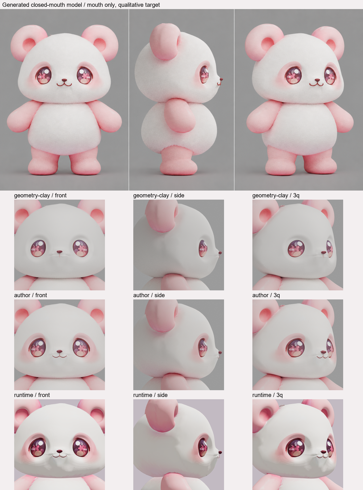
生成画像は口の設計参照。目・頭形などの生成差分は採用していない。比較画像は縮小overview、原寸レンダーは下記リンク。
閉口の前後
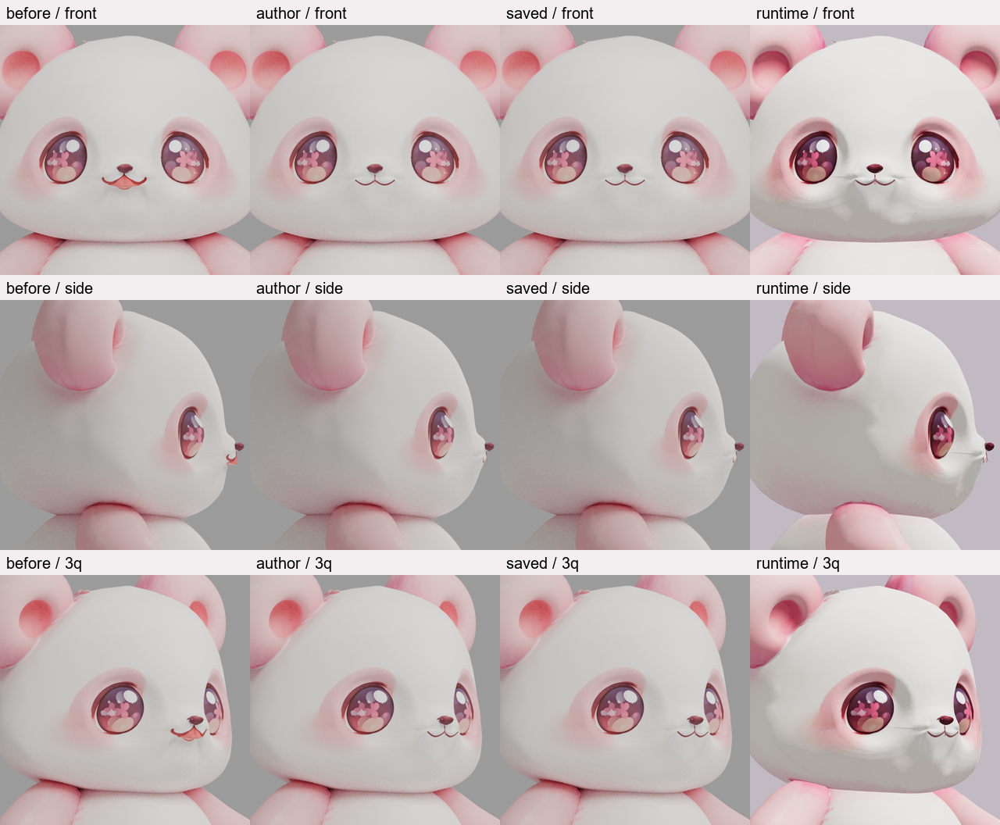
連続性 · PlayCanvas実描画
front · closed → open → closedside · closed → open → closed3q · closed → open → closed
author
closed / front · 640×640原寸リンクclosed / side · 640×640原寸リンク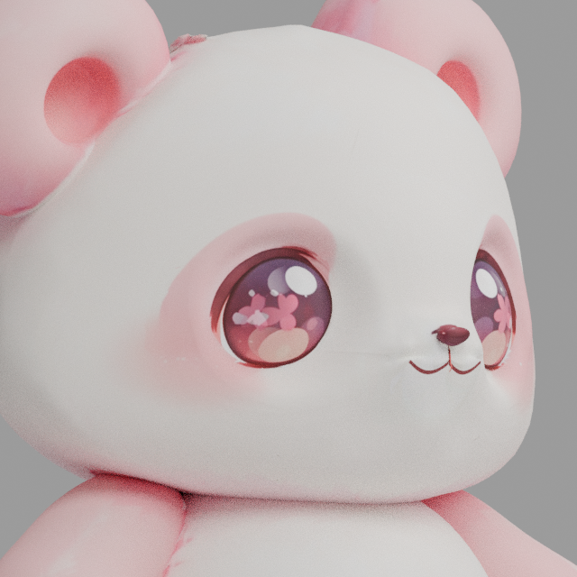
closed / 3q · 640×640原寸リンク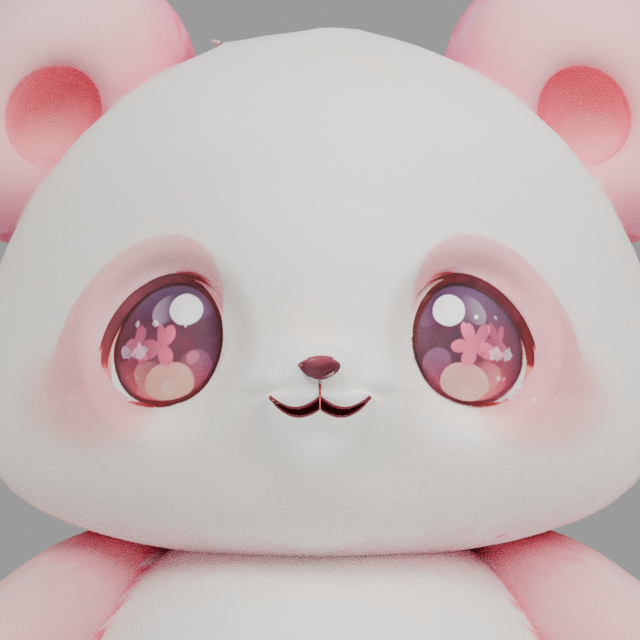
small / front · 640×640原寸リンクsmall / side · 640×640原寸リンクsmall / 3q · 640×640原寸リンクmedium / front · 640×640原寸リンク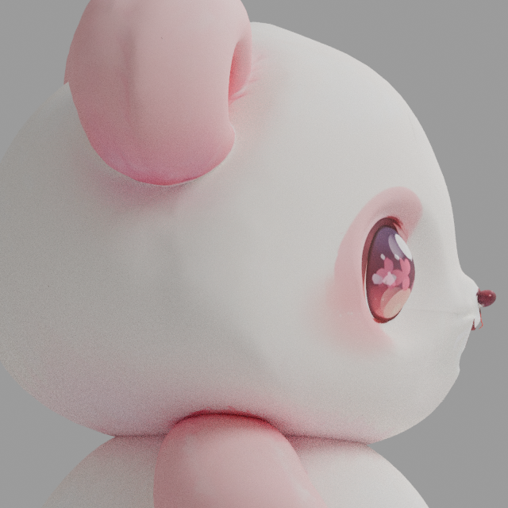
medium / side · 640×640原寸リンク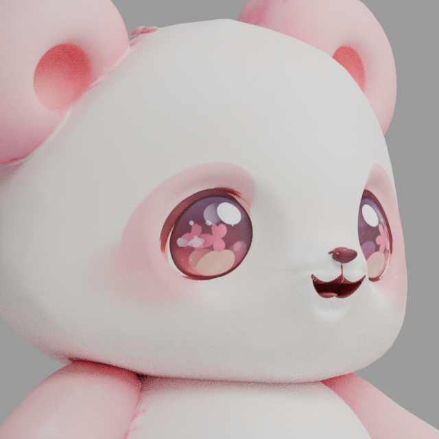
medium / 3q · 640×640原寸リンクlarge / front · 640×640原寸リンクlarge / side · 640×640原寸リンク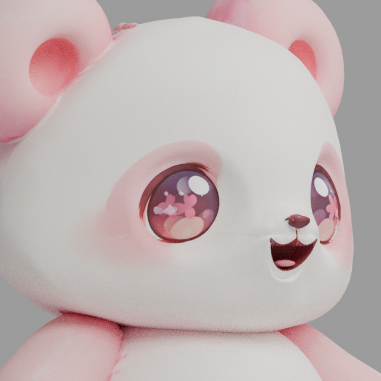
large / 3q · 640×640原寸リンク saved
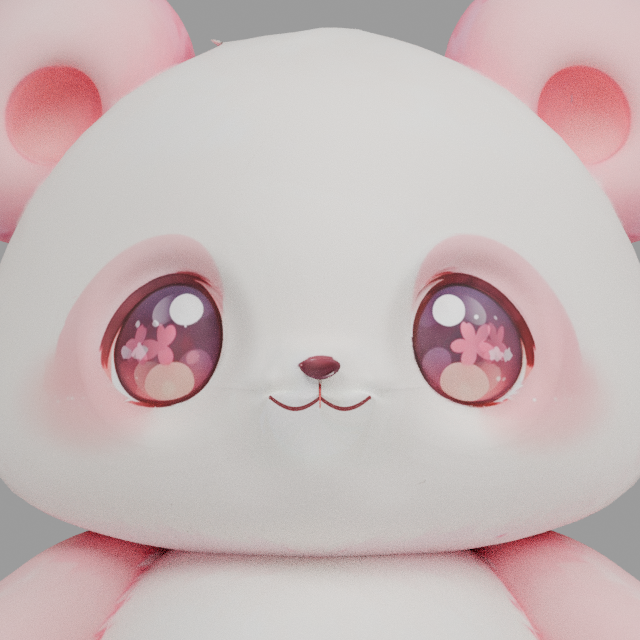
closed / front · 640×640原寸リンクclosed / side · 640×640原寸リンクclosed / 3q · 640×640原寸リンクsmall / front · 640×640原寸リンクsmall / side · 640×640原寸リンク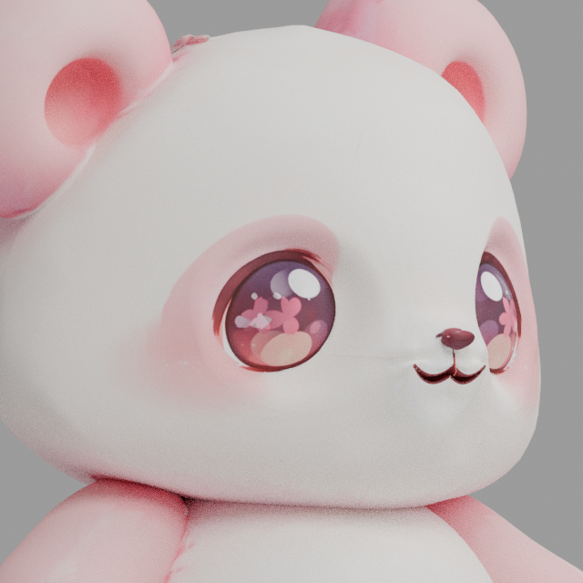
small / 3q · 640×640原寸リンク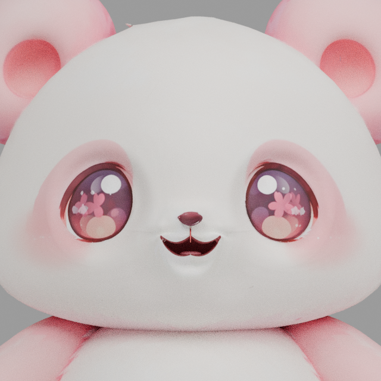
medium / front · 640×640原寸リンクmedium / side · 640×640原寸リンクmedium / 3q · 640×640原寸リンク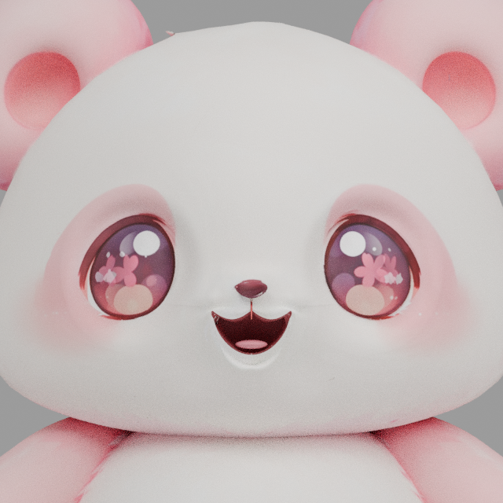
large / front · 640×640原寸リンクlarge / side · 640×640原寸リンクlarge / 3q · 640×640原寸リンクbefore
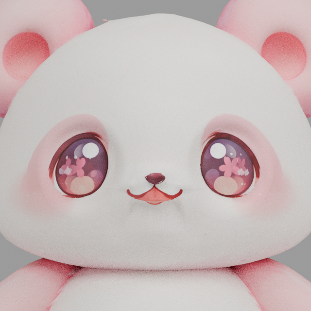
closed / front · 640×640原寸リンクclosed / side · 640×640原寸リンク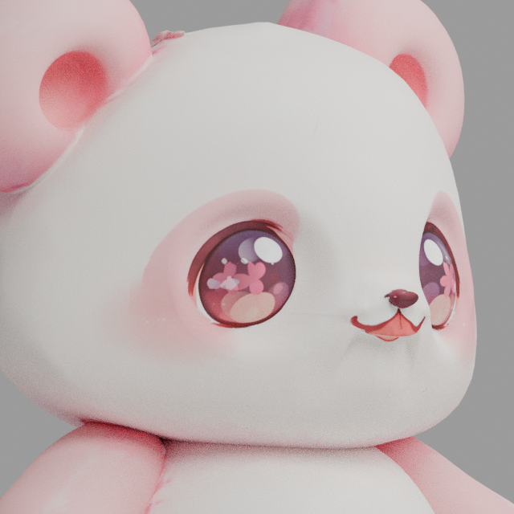
closed / 3q · 640×640原寸リンクsmall / front · 640×640原寸リンクsmall / side · 640×640原寸リンクsmall / 3q · 640×640原寸リンクmedium / front · 640×640原寸リンクmedium / side · 640×640原寸リンク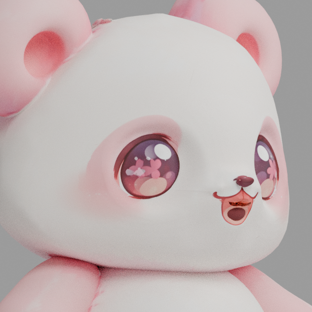
medium / 3q · 640×640原寸リンク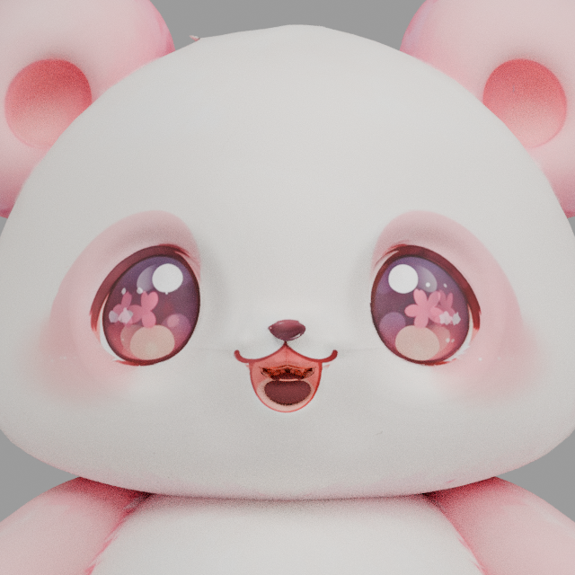
large / front · 640×640原寸リンク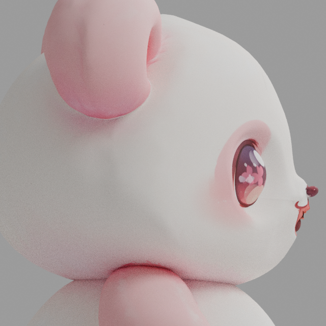
large / side · 640×640原寸リンクlarge / 3q · 640×640原寸リンク